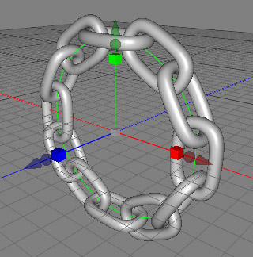
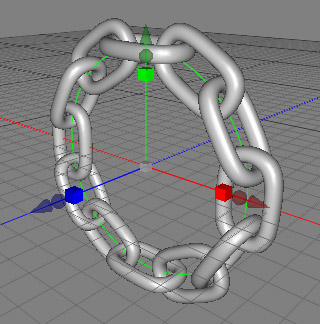
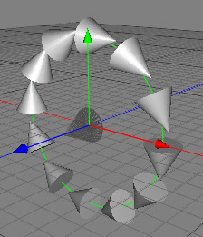

Chain Object
The chain object allows you to position multiple copies of the same object along a spline. This can be very useful if you want to model chains, fences, roads, 3D fonts etc. The chain object also allows you to rotate every instance of the item in the chain by a definable angle which opens up even more possibilities.
 

In the example above, you can see how you can create a chain along a circular spline. The link was modeled previously using ordinary polygon tools.
Usage
To use the chain object, just drag and drop a polygon object and a spline object into the chain object (see image above). It is important that the polygon object (the link) is the first child of the chain object and the spline object (the path) is the second child of the chain object. A different order won't work.
Take care to ensure that the link is orientated along the Z-axis, since the positive Z-axis of the link object will follow the path when you set the alignment property to mix or constant.

Properties
- Links: Determines the number of links in the chain.
- From: Controls where the chain starts. The entire length (including all subpaths) of the spline is used to calculate the starting position.
- To: Controls where the chain ends. The entire length (including all subpaths) of the spline is used to calculate the ending position.
- Holes: Determines the ratio of holes the chain will have. The holes are positioned by random.
- dH: Determines the change of the heading angle from link to link.
- dP: Determines the change of the pitch angle from link to link.
- dB: Determines the change of the bank angle from link to link.
- Alignment: Determines how the links are aligned along the path
- none: The links won't be aligned. They will be just moved to the path.
- const: The links will be aligned along the local path segment.
- mix: The links will be aligned in such a way that the transition between path segments is smooth.